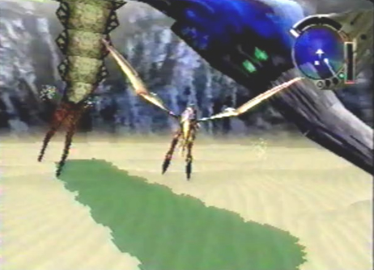
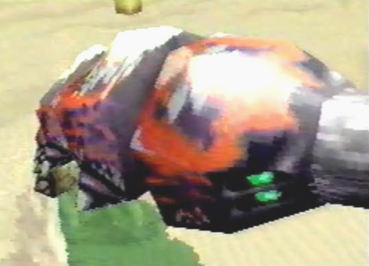

Sand Worm  |
Info These playful creatures spent their time burrowing into the sand throughout their nest. They were harmless and wouldn't bother us unless we bothered them. |
Red Sand Worm  |
Info Gash told me that red sand worms are rare. They aren't too different from the normal sand worms of the area, except for their bright red color. For some reason, these creatures made it a habit to move into underground subterranean tunnels, rather than stay burrowed in the sand. |